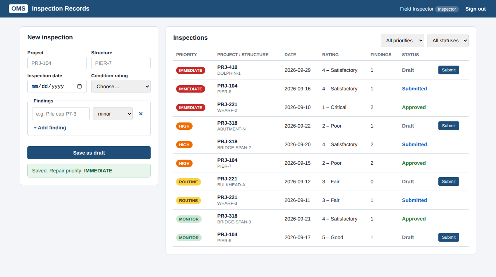
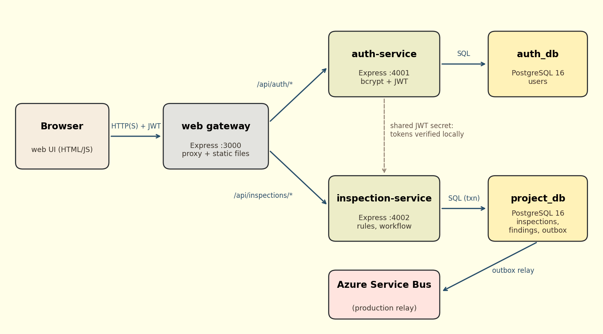
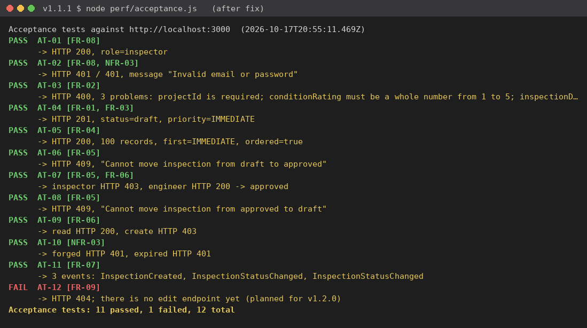
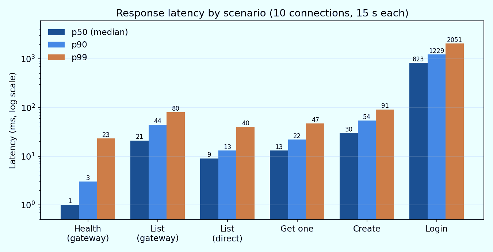

Which pier needs repair first?
My MSIT capstone is a cloud-ready inspection module that keeps every pier, wharf, and bridge inspection in one place, ranks it by its worst condition, and makes sure an engineer reviews it before anyone acts on it.
- Node.js, Express, PostgreSQL 16, Docker, planned for Azure Container Apps
- 46 automated tests and 12 acceptance tests across four testing levels
- Built as part of a real Operations Management System at an engineering firm
The problem
At a lot of mid-size engineering firms, inspection data splits apart the moment an inspector drives home. Photos go to a shared drive, condition ratings go into a spreadsheet, and the signed report goes into a document system nobody can search by structure.
That makes simple questions slow to answer, like which structures need repair first, or whether a record was ever reviewed. This module puts the records in one database, ranks them by repair urgency, and enforces a draft, submitted, approved workflow where only engineers can approve.


How it's built
The browser only talks to a gateway. Behind it, an auth-service issues one-hour signed tokens, and the inspection-service holds the validation, priority, and workflow rules as plain functions with no database code inside, so they're easy to test.
Permissions are checked on the server for every request, never just in the UI. Every change writes an event to an outbox table so other services can react later without losing anything.
What testing showed
| Measure | Result |
|---|---|
| Automated tests (unit, API, integration) | 46 of 46 passed |
| Acceptance tests through the gateway | 11 of 12 passed |
| Read one record, median latency | 13 ms |
| Save one record, median latency | 30 ms |
| Errors under load | 0 in 100,000+ requests |
| Data consistency after write tests | 100% |
| Usability review (out of 5) | 3.2 to 4.0 |
The failures were the most useful part. An acceptance test caught the API answering 409 instead of 403 when an inspector tried to approve a record. A unit test had missed it because it only checked the error type. A volume check found the list stops at 100 records, which is now planned work.
Numbers came from one shared CPU running everything at once, so they're a lower bound, not a production promise.


Deliverables
- Source codeFull repository with tagged releases from v0.1.0 to v1.1.1, a changelog, and setup steps in the README.
- Capstone reportLiterature review, requirements, architecture, testing results, deployment and maintenance plans.
- Deployment guideDocker Compose for local use and step-by-step Azure Container Apps commands, including rollback.
- Test scriptsAcceptance, load, and stability tests anyone can rerun against the running system.